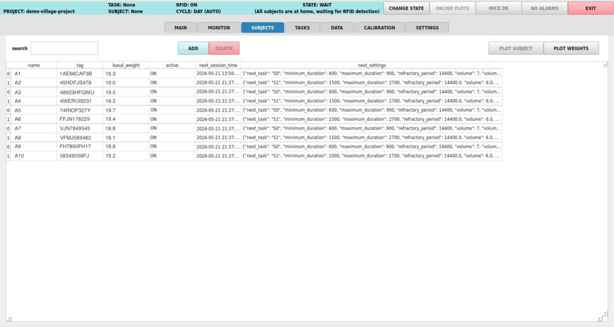

GUI Overview
Launch the GUI by entering the following command in a terminal:
village
When the GUI launches, the system automatically checks connections with essential components (such as cameras, temperature sensors, weight sensors, etc.). If any connection cannot be established, a warning message will display, and the Training Village will enter debug mode. For help resolving connection issues, refer to the troubleshooting section.
Once the GUI is active, a menu will appear at the top with the following options: MAIN, MONITOR, SUBJECTS, TASKS, DATA, CALIBRATION and SETTINGS.
MAIN

The default screen where the Raspberry Pi does not perform any rendering to display videos, although videos continue to be recorded and saved in the background. If there is no user activity for 5 minutes, the system automatically returns to this screen.
MONITOR

The MONITOR screen is used to track the system’s status, displaying real-time video feeds from both the corridor and the operant box. Here, you can view images captured by the two system cameras: one positioned above the corridor and another focused inside the operant box.
Primary Control Tabs
Depending on your active configuration, several control tabs are available at the center of the screen:
CORRIDOR: Provides manual and automated overrides for the RFID reader, lighting modules, doors, weighing scale, and temperature sensor. When the RFID system is toggled OFF, animal identification is disabled, and no subjects will be permitted to enter the operant box.The
VISIBLE LIGHTandIR LIGHTmodes can be set toON,OFF, orAUTO. InAUTOmode, visible light turns on during daytime hours and off at night, while the infrared (IR) light operates inversely. The specific daytime and nighttime schedules can be customized underSETTINGS->CORRIDOR_SETTINGS.BOX: Provides dedicated controls for the lighting and motor modules inside the operant box. If a Bpod is connected as the primary behavioral controller, this tab will also display dedicated buttons to manually trigger the port LEDs or deliver water rewards (1-second duration) directly to the behavior ports.The
VISIBLE LIGHTandIR LIGHTmodes can be set toON,OFF, orAUTO. InAUTOmode, both visible and IR lights (if installed) are dynamically triggered: they switch ON automatically as soon as an animal enters the operant box and switch OFF once the subject leaves.FUNCTIONS: Allows you to execute custom, user-defined Python functions in real time (e.g., displaying specific visual stimuli, playing auditory cues, etc.). Step-by-step instructions for writing and deploying these scripts can be found in the [Create a New Training Protocol][NEW] section.VIRTUAL MOUSE: Enables real-time simulation of animal behavior through software triggers—an invaluable tool for debugging task logic and testing system responsiveness.Bpod Integration: Simulate a nose-poke in any behavior port with a single click.
Touchscreen Integration: Simulate screen-touch events by sending precise coordinate inputs \((x, y)\).
Position Tracking: If real-time animal tracking is active within the operant box, you can simulate custom trajectories to verify location-based experimental triggers.
Secondary Diagnostic Tabs
A secondary group of tabs is located at the bottom of the screen to monitor system telemetry and history:
INFO: Displays a live stream of recent system events and operational logs. Double-clicking any logged event opens an expanded window with detailed diagnostic information.PLOT: Renders an interactive graphical chart illustrating both successful entries and denied entry attempts for all subjects over the past seven days.DETECTION SETTINGS: Provides fine-grained control over the computer vision and animal detection parameters for both the corridor and operant box tracking systems. A comprehensive breakdown of these parameters is available in the Animal Detection Section.
SUBJECTS

In this section you can create new subjects. Check the Subject Management Section.TASKS

From this screen, tasks can be launched manually at any time.
The active training protocol is displayed on the left side, along with a list of all available tasks. Clicking on the training protocol allows you to test its functionality (check the Manual Task Execution section to know how). When you click on a task, task information is displayed, along with an options menu that includes the following settings:
Subject: Clicking here opens a list of all available subjects, as well as the option “None.” Selecting “None” runs the task without saving any data.maximum_number_of_trials: The task will automatically end once this number of trials is completed.maximum_duration: The task will automatically end when this timer is reached.
In addition to these settings, a list of all variables defined for this specific training protocol will appear. In the Protocol Creation section, we explain how to create a protocol and define its variables.
The RUN TASK button starts the task.
DATA

On this screen, saved data is displayed. The following tables are accessible:
EVENTS: A comprehensive system log that records animal entries, exits, and denied entry attempts. Selecting any specific event and clickingVIDEOopens the corresponding video recording of that moment.SESSIONS SUMMARY: A historical list of all completed training sessions. Selecting an item from this list grants access to its corresponding CSV file (available in both standardDATAand rawDATA_RAWformats), the session’s video file,VIDEOand a user-configurable behavioral plotPLOT.TEMPERATURES: A chronological log of all recorded environmental temperature and humidity values within the system.SESSION_RAW: Displays the session currently in progress or the most recently completed one, rendered in real time (one row per registered hardware/behavioral event). ClickingPLOTopens a user-configurable, real-time graphical chart of the session.SESSION: Displays the session currently in progress or the most recently completed one, structured according to the final data storage format (parsed dynamically into one row per trial). ClickingPLOTopens a user-configurable, real-time graphical chart of the session.CALIBRATION: Contains parameter data regarding all currently active system calibrations.
A more detailed description of these tables, including their exact database schemas and storage paths, can be found in the Saved Data section.
SETTINGS

This section displays a comprehensive list of all modifiable system settings, organized into distinct categories for streamlined configuration. You can hover over any individual parameter item to view a tooltip with more detailed information.
The most critical parameters from this list will be discussed and modified step-by-step in the next section.